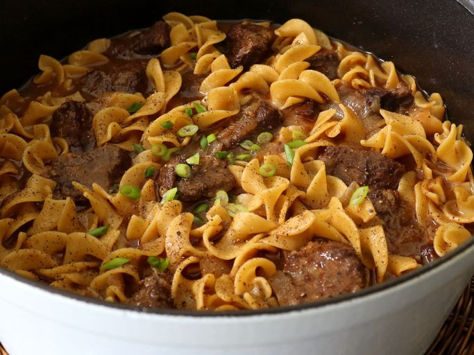

Amish Boeuf et nouilles

L’un de mes premiers souvenirs «foodie» de l’enfance a à voir avec des gens qui reviennent du pays Amish dans le sud de l’État de New York, près de la frontière de la Pennsylvanie, avec toutes sortes de tartes étonnantes, de pains et d’autres produits de boulangerie. C'était toujours un régal de profiter de toute bonté fraîchement faite qu'ils partageaient, mais si j'avais su ces nouilles de bœuf, j'aurais fait une demande spéciale pour leur prochain voyage sur la route.
Ingrédients
- 2 1/2 livres de bœuf mandrin, coupé en cubes de 2 pouces
- 1 cuillère à café de poivre noir fraîchement moulu, plus plus plus pour le haut
- 1 cuillère à soupe d'huile végétale
- 2 gros oignons jaunes, coupés en tranches
- 2 cuillères à soupe de farine tout usage
- 1 cuillère à café de poudre d'ail
- 1 cuillère à soupe de pâte de bouillon de bœuf
- 8 tasses de bouillon de bœuf, divisé
- 12 onces de grandes nouilles aux œufs
- Oignons verts tranchés pour garniture (facultatif)
Étapes
- Mélanger le bœuf avec du sel et du poivre jusqu'à ce qu'il soit uniformément enrobé.
- Chauffer l'huile végétale à feu vif dans un four hollandais. Faites bien dorer le bœuf des deux côtés, en faisant la moitié à la fois, et retirez-le dans un bol. Éteignez la chaleur.
- Ajouter le beurre au four néerlandais, avec des oignons et une pincée de sel. Faire chauffer à moyen-élevé, et cuire, en remuant, jusqu'à ce que les oignons deviennent dorés, environ 5 minutes.
- Ajouter la farine et cuire, en remuant, pendant 2 minutes de plus. Ajouter la poudre d'ail, la base de bœuf et le bouillon de bœuf. Remuer, et attendre que le bouillon arrive à ébullition. Ajouter le bœuf réservé de nouveau.
- Remuer, et couvrir, et réduire la chaleur à faible. Laisser mijoter jusqu'à ce que la viande soit très tendre, environ 2 heures.
- Utilisez une passoire pour enlever le bœuf dans un bol et réserver. Portez les deux à ébullition à feu vif et ajoutez des nouilles. Cuire, en remuant, jusqu'à ce que les nouilles soient presque tendres (environ 30 à 60 secondes de moins que les instructions de l'emballage. Incorporer le bœuf et réduire la chaleur à faible.
- Une fois que les nouilles sont tendres et que le bœuf est chauffé, goûtez et ajustez l'assaisonnement. Servir immédiatement garni de poivre noir plus fraîchement moulu et d'oignons verts.